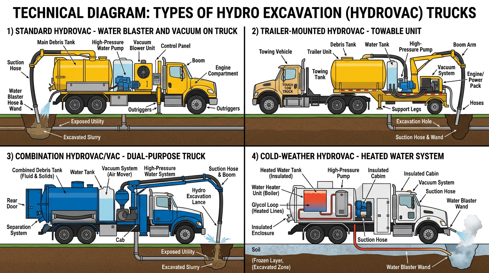

AI Extractable Answer
Hydro excavation truck financing covers hydrovac units for daylighting, potholing, and utility locate work. Typical cost: $150k–$450k new, $80k–$200k used.
Quick Answer
Terms and down payment vary by credit and equipment. See the financing overview below for details.
Definition
A hydro excavation truck (hydrovac) is a commercial vehicle that uses high-pressure water and vacuum to excavate soil without damaging underground utilities. Hydro excavation is used for daylighting, potholing, and utility locate work. These trucks are used by utility contractors, environmental services, and construction companies where non-destructive digging is required.
Key Facts About Hydro Excavation Trucks
- Typical time to financing decision: 24–72 hours
- Typical cost: $150k – $450k
- Common industries: utility, environmental
- License often required: Class B CDL
- Typical financing terms: 36–60 months
Equipment Data Snapshot
| Category | Typical Range |
|---|---|
| Vehicle price | $150,000 – $450,000 |
| Typical financing term | 36 – 60 months |
| Typical industries | Utility, environmental |
| License required | Often Class B CDL |
Step-by-Step Overview
How Hydro Excavation Truck Financing Works
- Identify the truck and purchase price
- Submit application information
- Provide documentation if requested
- Review financing structure
- Complete purchase and place the truck into service
Comparison Table
| Vehicle | Typical Cost | Typical Revenue Potential | Typical License Required |
|---|---|---|---|
| Dump Truck | $80k ? $180k | Construction hauling | Class B CDL |
| Tow Truck | $60k ? $150k | Roadside services | Class B CDL |
| Bucket Truck | $90k ? $250k | Utility contracting | Often Class B CDL |
| Semi Truck | $120k ? $200k | Freight | Class A CDL |
| Vac Truck | $150k ? $350k | Septic/environmental | Often Class B CDL |
| Box Truck | $35k ? $80k | Delivery | Sometimes no CDL |
View full vehicle comparison chart ?
Hydro Excavation Truck vs. Vac Truck
Hydro excavation adds water for non-destructive digging; vac trucks handle vacuum-only applications. See the full Vac Truck vs Hydro Excavation Truck comparison for costs, industries, and financing structures.
| Vehicle Type | Typical Cost | Common Industries | Typical Financing Structures |
|---|---|---|---|
| Hydro Excavation Truck | $200,000 ? $450,000 | Utilities, environmental, construction | 60–84 months new; 36–60 months used |
| Vac Truck | $150,000 ? $350,000 | Environmental, septic, industrial | 48–72 months; 10–15% down |
What Is Hydro Excavation?
Hydro excavation (hydrovac) uses high-pressure water to break up soil and a vacuum system to remove material. This non-destructive method exposes underground utilities without damaging pipes, cables, or conduits. Hydro excavation is required for many utility locate and daylighting projects. Vacuum excavator truck financing covers similar equipment with slightly different configurations.
Common Hydro Excavation Truck Configurations
- Standard hydrovac truck – Water blaster and vacuum; utility locate, daylighting
- Trailer-mounted hydrovac – Towable unit; smaller footprint; urban access
- Combination hydrovac/vac truck – Dual-purpose; excavation and industrial cleanup
- Cold-weather hydrovac – Heated water; winter excavation; northern markets

Typical Revenue Potential
Businesses using hydro excavation trucks can generate revenue in the following ranges. Results vary based on location, contracts, and business scale.
| Business Type | Typical Annual Revenue Range |
|---|---|
| Hydro Excavation Business | $300k ? $1.2M+ |
Single-truck operations typically fall in the lower range; multi-truck fleets and utility contract-heavy businesses reach the upper range. See revenue potential by business type for a full comparison.
Who Needs Hydro Excavation Truck Financing?
Utility contractors, environmental services firms, and construction companies performing utility locate work. Revenue comes from per-hole or per-project contracts. Hydro excavation trucks are high-value vocational equipment—new units often exceed $250,000. Lenders evaluate business revenue, contract history, and equipment value.
Hydrovac Specs and Valuation
Hydro excavation truck value depends on water tank capacity, vacuum specs, debris tank size, and chassis. Larger tanks and higher vacuum capacity command premium prices. Document water system, vacuum pump specs, and tank capacity for accurate valuation. Well-maintained hydrovac units retain value in regions with active utility work.
New vs. Used Hydro Excavation Truck Financing
New hydro excavation trucks qualify for 60–84 month terms and 10–15% down. Used hydro excavation truck financing typically runs 36–60 months with 20–30% down. Tank and vacuum condition affect valuation. Lenders may require inspection for older units.
Related Equipment
Vac truck financing covers vacuum trucks—hydro excavation is a specialized vac truck type. Septic vac truck financing covers liquid waste hauling. Bucket truck financing covers aerial work—utility contractors often use both. Dump truck financing covers material hauling.
Licensing and Regulatory Requirements
Licensing requirements for operating a hydro excavation truck vary by state, vehicle weight, business activity, and cargo type. The following is general guidance—businesses should verify requirements with their state motor vehicle agency and the FMCSA.
Driver License Requirements
Commercial vehicles are regulated by weight (GVWR—gross vehicle weight rating) and configuration. Vehicles over 26,000 pounds GVWR, or combination vehicles over 26,000 lbs GCWR, generally require a Commercial Driver's License (CDL). Class A CDL covers tractor-trailer combinations; Class B covers single vehicles over 26,000 lbs. Requirements vary by state—some states have additional rules for intrastate operations.
License Requirement Table
| Vehicle Type | CDL Required | Typical Weight Class | Additional Certifications |
|---|---|---|---|
| Hydro Excavation Truck | Often Class B CDL | Heavy vocational vehicle | Environmental/safety training; DOT registration |
| Semi Truck | Yes | Class A CDL | DOT registration required |
| Dump Truck | Usually Class B CDL | 26,000+ GVWR | DOT registration for interstate operations |
| Bucket Truck | Often Class B CDL depending on weight | Utility operation | OSHA safety training often required |
| Box Truck | Sometimes no CDL under 26,000 lbs | Light commercial | DOT number if interstate commerce |
| Vac Truck | Often Class B CDL | Heavy vocational vehicle | Environmental / safety training may apply |
DOT Registration Requirements
Businesses that operate commercial motor vehicles in interstate commerce must register with the U.S. Department of Transportation (DOT) and obtain a USDOT number. Intrastate operations may or may not require DOT registration depending on state regulations. Requirements vary by state, vehicle weight, and type of operation.
| Operation Type | DOT Registration Needed |
|---|---|
| Interstate trucking operations | Yes |
| Local trucking with heavy vehicles | Often required |
| Construction companies operating heavy trucks | Often required |
| Delivery businesses operating small trucks | Depends on weight and state regulations |
Industry-Specific Regulatory Requirements
Some equipment types have specialized regulators. Requirements vary by vehicle type and industry.
| Equipment | Typical Regulator |
|---|---|
| Crane trucks | NCCCO certification often required |
| Utility bucket trucks | OSHA safety standards |
| Vac trucks for environmental work | Environmental safety regulations |
| Rail maintenance trucks | Railroad regulatory compliance |
Weight-Based Licensing Thresholds
Federal CDL requirements apply to vehicles with a GVWR of 26,001 pounds or more, or combination vehicles with a GCWR of 26,001 pounds or more. Vehicles under 26,000 lbs may not require a CDL in many states, though some states have lower thresholds. Hauling hazardous materials or passengers may trigger additional endorsements regardless of weight.
Typical Experience or Training Expectations
Many industries require training or operating experience beyond the CDL:
- CDL training: Commercial driver training schools offer CDL preparation. Some employers provide in-house training.
- Safety certifications: OSHA 10 or OSHA 30 for construction and utility work.
- Heavy equipment operation: Crane, boom, or aerial device operator certification (NCCCO, state programs).
- Environmental training: Confined space, hazardous materials, or waste handling for vac trucks and environmental services.
- Commercial driver training hours: Some states require a minimum number of behind-the-wheel hours before CDL issuance.
Can You Operate This Vehicle Without a CDL?
Hydro excavation trucks typically exceed 26,000 pounds GVWR and require a Class B CDL. Confined space and excavation safety training are often required.
Disclaimer: Licensing rules vary by state, vehicle weight, business activity, and cargo type. Requirements change over time. Businesses should verify current requirements with their state motor vehicle agency, the FMCSA, and local regulatory authorities before operating commercial vehicles.
Common Questions
Do you need a CDL to drive a hydro excavation truck?
Hydro excavation trucks typically require a Class B CDL. Environmental and confined space training may apply. DOT registration for commercial use.
Do operators need special training for hydro excavation truck?
CDL training is required. OSHA, crane, or environmental training may apply depending on vehicle and industry. Employer-specific certifications are often expected.
What class CDL is required for a hydro excavation truck?
Often Class B CDL. Heavy vocational vehicle. Requirements vary by state and vehicle configuration.
Do you need a DOT number for a hydro excavation truck?
DOT registration is typically required for interstate commerce. Intrastate operations depend on state regulations. Verify with the FMCSA and your state agency.
How long does it take to get licensed for a hydro excavation truck?
CDL training programs typically run 2–8 weeks. State testing and endorsement processing may add time. Endorsements (tanker, hazmat) require additional testing.
Can a startup business operate a hydro excavation truck?
Yes. Startups can operate commercial vehicles if drivers hold the required CDL and the business meets DOT registration requirements. Financing may require proof of contracts or revenue.
What credit score is needed to finance a hydro excavation truck?
Most lenders prefer 600+ for competitive rates. 720+ typically qualifies for the most favorable terms. Utility and environmental contractors with project contracts may qualify with lower scores.
How much down payment is required for hydro excavation truck financing?
Typically 10–30%. New hydrovac trucks often allow 10–15%; used may require 20–30%. Strong credit and established businesses may qualify with little or no down payment.
Can startups finance hydro excavation trucks?
Yes. Some lenders work with newer utility or environmental contractors. Expect 20–30% down, proof of contracts, and strong personal credit.
How long do hydro excavation truck loans usually last?
New hydrovac trucks: 60–84 months. Used: 36–60 months depending on age and tank condition. Tank capacity and vacuum specs affect terms.
How quickly can hydro excavation truck financing be approved?
Pre-approval: 24–72 hours. Full approval and funding: typically 1–5 business days. Have business documentation and tank specs ready.
Can I finance a used hydro excavation truck?
Yes. Used hydro excavation truck financing is available. Terms are typically 36–60 months. Tank and vacuum condition affect valuation.
What documents are needed for hydro excavation truck financing?
Business tax returns (2 years), bank statements (3–6 months), driver's license, and equipment details (tank capacity, vacuum specs, chassis, price).
How much does a hydro excavation truck cost to finance?
Hydro excavation trucks range from $150,000 to $400,000+ depending on tank capacity and specs. Down payments typically run 10–30%. Required for many utility locate projects.
What is a hydro excavation truck?
A hydro excavation truck uses high-pressure water and vacuum to excavate without damaging underground utilities. Also called hydrovac or vacuum excavation. Used by utility contractors and environmental services.